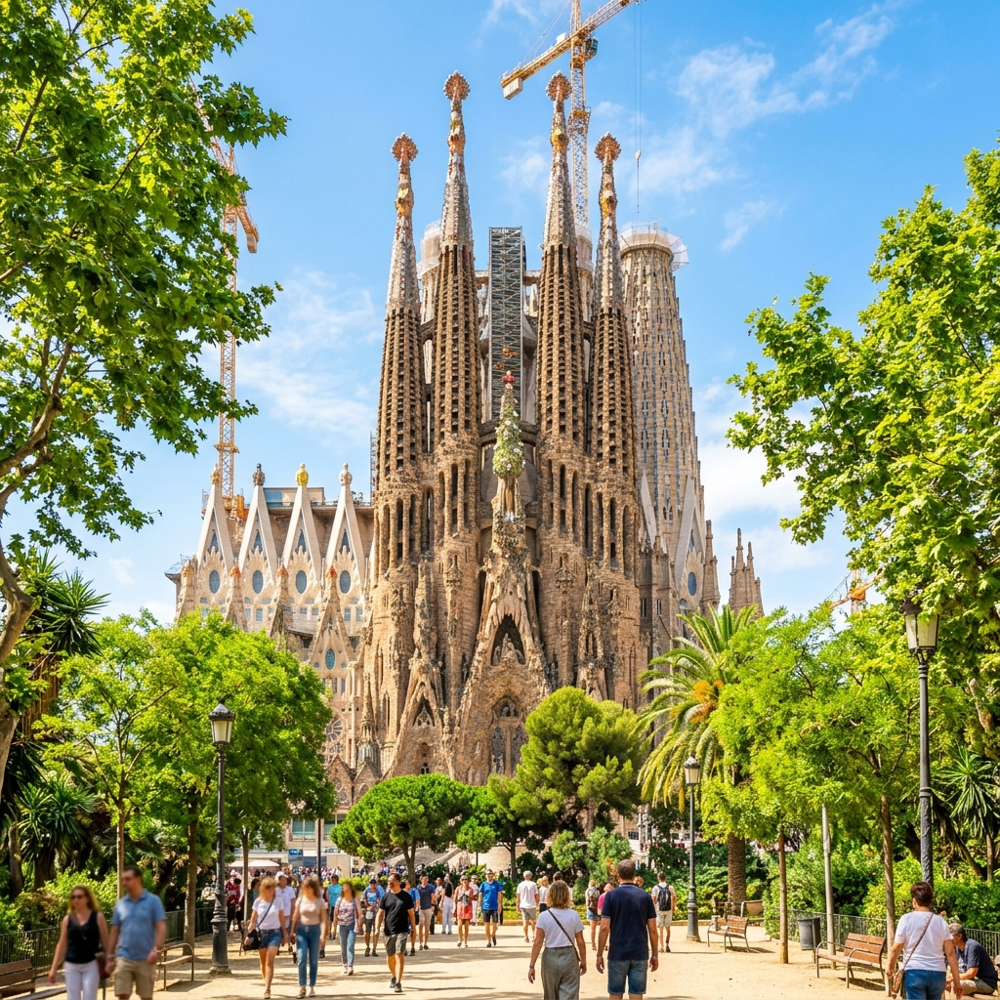

Испания
Оформление шенгенской визы в Испанию — отличный повод начать планировать маршрут по тапас-барам. Процент одобрения очень высокий.
Подача возможна только в Москве и Ростове-на-Дону.
С записью сейчас непросто: слоты разбирают моментально, но мы умеем находить «окна» — срочные варианты на ближайшие дни по запросу.
Срок оформления с момента сдачи документов — от двух недель.
Сейчас выдают визы строго под даты поездки. Но консульство может добавить небольшой коридор для въезда.

7 000 ₽
Консультация и подготовка документов.
Консульский и сервисный сборы оплачиваются отдельно — примерно 12 000 ₽.
Список документов и условия оформления
Оформить шенген с нами просто!
Оформление визы в Испанию в Краснодаре и Сочи!
Кто может получить визу в 2026 году?
Испания выдает все типы виз. Страна открыта для любых целей поездки.
С 14 сентября 2015 для получения шенгенской визы нужно сдать отпечатки всех пальцев и сделать цифровое фото. Эту процедуру можно пройти в визовом центре Испании в г. Москва, г. Ростов-на-Дону
Наша компания поможет вам максимально упростить процедуру оформления визы в Испанию. Мы дадим подробную консультацию по оформлению визы и поможем собрать корректный пакет документов, исходя из цели вашей поездки, полностью соответствующий требованиям Консульства.
Стоимость консультации и подготовки документов - 7000 р.
*Отдельно при подаче оплачиваются консульский сбор и сервисный сбор визового центра ~12000 р.
Чтобы оформить визу в Испанию и получить список документов в зависимости от цели вашей поездки, вы можете :
-написать нам на почту vivastravel@gmail.com
-позвонить по телефону +79628538393
Список основных документов для оформления визы в Испанию:
1. Опросник на шенгенскую визу с нашего сайта, заполненный разборчиво на русском языке.
2. Действующий загранпаспорт с двумя чистыми страницами,срок действия которого должен перекрывать на 90 дней срок планируемой поездки, а также копия всех его страниц; оригиналы всех аннулированных паспортов с ксерокопиями всех страниц.
3. Две цветных фотографии 35х45 мм на белом фоне, не старше 6 месяцев, размер головы от макушки до подбородка 31-33 мм (делаем в офисе).
4.Копии всех страниц общегражданского паспорта.
5. Медицинская страховка путешественника на весь период предполагаемой поездки, действительная во всех странах Шенгена и покрывающая любые расходы, которые могут возникнуть в связи с возвращением на родину по медицинским показаниям, необходимостью оказания срочной медицинской помощи, срочного лечения в стационаре или смертью в период поездки. Минимальная страховая сумма — €30.000 (можно оформить у нас в офисе)
6 .Подтверждение достаточного количества денежных средств из расчета 108 евро на каждый день поездки(выписка из банка об остатке денег на счете с движением средств за 3 месяца), но не менее 1000 евро на поездку.
При отсутствии — иное доказательство финансовой состоятельности (например, оригинал выписки с банковского счета, или доказательство спонсорства третьим лицом (спонсорское письмо + копия первой страницы паспорта спонсора + справка с работы и из банка спонсора в оригинале)
Для индивидуальных предпринимателей справка может быть как с личного счета, так и с расчетного счета!
7. Справка с места работы ( должна быть распечатана на бланке компании и содержать следующую информацию: адрес и номера телефонов работодателя, позиция сотрудника в компании, месячный заработок, с какого времени сотрудник работает в компании, подтверждение предоставления отпуска или командировки).
- Для пенсионеров: копия пенсионного удостоверения
- Для индивидуальных предпринимателей и работающих у ИП- копии свидетельств ОГРН и ИНН
- Для студентов и школьников: справка с места учебы даже на время каникул!!
С 01 октября 2024 года все заявители старше 18 лет, обязаны предоставлять:
Выписку из Фонда пенсионного и социального страхования Российской Федерации о трудовой деятельности за последние 10 лет (Сведения о трудовой деятельности, предоставляемые из информационных ресурсов Фонда пенсионного и социального страхования Российской Федерации). Документ должен быть подписан цифровой или «живой» подписью.
Все предоставляемые справки должны быть не старше месяца на момент подачи документов!!!
8. Для детей – копия свидетельства о рождении ребенка.
9. Для въезда детей, путешествующих без сопровождения родителей ( или в сопровождении одного из родителей) требуется нотариально заверенное согласие на выезд от родителей( или от одного родителя) +копии паспортов родителей(страница с личными данными и пропиской)и копия паспорта лица, на которого оформлено согласие. В согласии обязательно должна быть прописана фраза «…..в Испанию и другие страны Шенгенского соглашения».
Согласие должно быть выдано не ранее 6 месяцев назад, и быть оформлено не более, чем на год.
10. Подтверждение о бронировании билета на самолет или, в случае поездки на поезде или автобусе, копию билета или подтверждения о бронировании билета на поезде или автобусе
11.Для поездок на автомобиле: копия водительских прав и свидетельства о регистрации ТС, а также страховка на ТС (Green Card), действующая на весь период поездки.
Дополнительные документы в зависимости от цели поездки:
Туризм:
- Подтверждение о бронировании гостиницы, содержащее следующую информацию: название, адрес и номер телефона гостиницы, а также имена и фамилии всех заявителей на латинице(как в загранпаспорте)
- Копия контракта аренды квартиры или дома
Частные визиты:
- приглашение от частного лица. Требования к приглашениям:
a) Приглашающий постоянно проживает на территории Испании (гражданство или вид на жительство в Испании):
- Приглашение в произвольной форме с указанием сведений о приглашающем лице, приглашенном лице, с датами поездки и месте проживания приглашенного, на английском или русском языке — только напечатанное на компьютере, рукописный вариант допускается только на испанском языке.
- Оформленное в Комиссариате полиции в Испании (Предоставляется только в оригинале!!!)
b) Приглашающий постоянно проживает на территории России и является владельцем недвижимости в Испании:
- Напечатанное в произвольной форме с указанием сведений о приглашающем лице, приглашенном лице, с датами поездки и месте проживания приглашенного.
Для всех типов приглашений обязательно:
- Если приглашающее лицо проживает в арендованной недвижимости- копия контракта аренды
- Если приглашающее лицо проживает в собственной недвижимости- выписка из реестра частной собственности (Nota Simple). Выписка действительна 3 месяца с момента выдачи.
- Копия действительного документа приглашающего лица, подтверждающего легальность нахождения на территории Испании (паспорт, DNI, вид на жительство, действующая виза).
- Если приглашающее лицо выступает спонсором поездки,это прописывается либо в приглашении, либо предоставляется спонсорское письмо+копия справки из банка с суммой из расчета 65 евро на каждый день поездки приглашенного лица.
- Подтверждение родственных связей (свидетельство о рождении, свидетельство о браке, свидетельство о перемене фамилии, свидетельство об установлении отцовства, Libro de Familia), если приглашающее лицо является родственником.
Владельцы недвижимости:
- Копия договора купли-продажи (Escritura)
- Выписка из реестра частной собственности (Nota simple). Выписка должна быть выдана в течение последних трех месяцев, предшествующих дате подачи документов.
Обратите внимание, что как владельцы недвижимости подавать документы могут только заявители, прописанные в договоре купли-продажи, их законные супруги (при подтверждении родства) и несовершеннолетние дети (в том числе приемные, при подтверждении родства), а также дети владельцев недвижимости до 21 года включительно при условии обучения в учебном заведении на дневном отделении (при документальном подтверждении).
Деловая поездка:
- Приглашение от испанской компании с указанием конкретных дат и целей поездки, подписанное уполномоченным лицом. В случае, если приглашающая сторона берет на себя расходы, связанные с поездкой, это должно быть указано приглашении.
- Подтверждение размещения (бронь гостиницы / копия контракта аренды квартиры или дома / другое).
Если в приглашении указан адрес размещения в Испании на весь период запрашиваемой визы, дополнительное подтверждение места пребывания не требуется.
Дополнительно можно предоставить:
- Копию документа, подтверждающего личность приглашающего.
- Подтверждение длительных деловых контактов с приглашающей стороной, в случае, если таковые имели место.
Лечение:
- Приглашение из клиники с указанием конкретных дат поездки и стоимости лечения.
- Подтверждение размещения .
Если в приглашении указан адрес размещения в Испании на весь период запрашиваемой визы, дополнительное подтверждение места пребывания не требуется.
Участники культурных, научных и творческих мероприятий:
- Приглашение от испанской организации с указанием конкретных целей, предполагаемой деятельности, подписанное представителем приглашающей стороны / организации. В случае, если приглашающая сторона берет на себя расходы, связанные с поездкой, это должно быть указано в приглашении.
- Подтверждение размещения (бронь гостиницы / копия контракта аренды квартиры или дома / другое). Если в приглашении указан адрес размещения в Испании на весь период запрашиваемой визы, дополнительное подтверждение места пребывания не требуется.
Для всех типов виз нужны фото и медицинская страховка.
Все это вы можете сделать у нас в офисе.
С 01 октября 2024 года все заявители старше 18 лет, обязаны предоставлять:
Выписку из Фонда пенсионного и социального страхования Российской Федерации о трудовой деятельности за последние 10 лет (Сведения о трудовой деятельности, предоставляемые из информационных ресурсов Фонда пенсионного и социального страхования Российской Федерации). Документ должен быть подписан цифровой или «живой» подписью.
Обсудим вашу поездку?
Уточним состав услуги и порядок подачи, ответим на вопросы по документам.